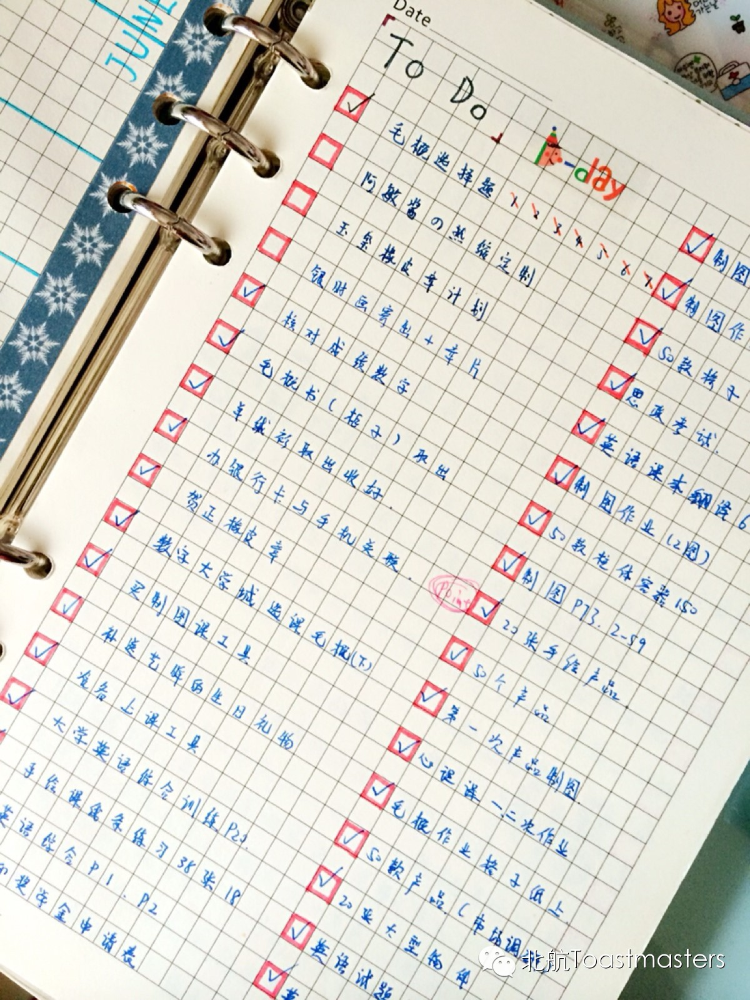

My 2014
Time:19:30-21:30, Friday, Dec. 19th
Venue: Room A209,New Main Building, Beihang University

Toastmaster:Doris Yu
Table Topic Master: Veronica Hu
Fortnights to go till the end of this year! During the whole year, great changes took place in each individual’s life as well as in the society. Millions of people working or studying out of their hometowns hurried home to reunite with families as the Chinese Spring Festival approached. Germany claimed a World Cup Champion with astonishing score of seven to one in hot summer. And Jack Ma hit pay dirt with a valuation of $26 billion when his Chinese business-to-business start-up went public in November. Graduates confront challenges and destructions after having left universities; at the meantime they are still pursuit dream and happiness. As counting down the days, let’s together make a review and conclusion on individuals' 2014. Do you still remember the New Year’s resolution? Are your goals achieved?
On Friday night, our TTM Veronica Hu would bring you to a journey by theTime Machine and have a look on everyone’s 2014 with well-designed questions.
Prepared Speech
Wealth Management
CC7 Sunny Xiang
It is said
that money is evil but indispensible for every person in modern society. In Rich Dad Poor Dad, a famous saying goes
as follows: the poor and the middle class work for money; the
rich have money work for them. Here comes the question: how to keep a balanced
or profitable finance? Let us have a lesson from Sunny on wealth management.
Map
Our meeting venue is RoomA209, New Main Building, Beihang University (北航新主楼A209房间). Click here to see large map. And you can phone to Deron for help.
TEL: 180-0125-3933
See you in the meeting!

https://mp.weixin.qq.com/s/-XZvTZn4UeaN6KFF_iLhbQ
本页为抢救式本地归档，图文已永久保存。